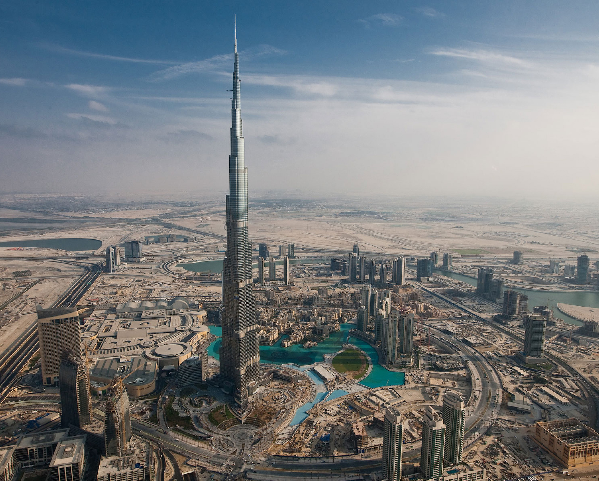
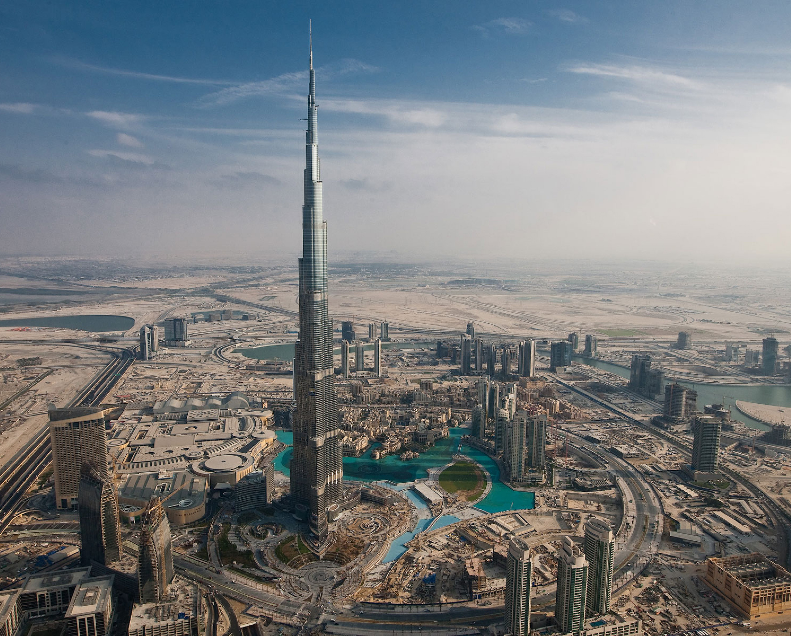

Building: Burj Khalifa
Name: Nicola
Surname: Russo
University ID: 433040
Documentation:
- Computational Graphics 2014
- Burj Khalifa Wikipedia
Link to project:
- exercise1.py
- exercise2.py
- Struttura Completa
- exercise3.py
- exercise4.py
- Burj Khalifa (final + land)
Images:
 Burj Khalifa (completo).
Burj Khalifa (completo).
 Burj Khalifa (completo - view 2).
Burj Khalifa (completo - view 2).
 Arredo urbano.
Arredo urbano.
 Burj Khalifa (solo struttura; exercise1+2)
Burj Khalifa (solo struttura; exercise1+2)
 Composizione Struttura (exercise1).
Modello reale.
Description:
Il progetto è stato realizzato quasi totalmente con le librerie Lar-cc. Per la realizzazione della struttura (16 piani + antenna) ho definito (esercizio1):
larKhalifaFloor(wingA = 0, wingB = 0, wingC = 0) : genera piani per la struttura. Consene di modificare le ali del piano allungandole (valori negativi) ed accorciandole (valori positivi).
larKhalifaPillar(params): genera pilastri cilindrici per la struttura.
Per la realizzazione delle coperture verticali (esercizio2) ho definito:
larKhalifaPillarsVerticalEnclosures(params): genera pareti cilindriche verticali per i pilastri della struttura.
larKhalifaVerticalEnclosures(wingA = 0, wingB = 0, wingC = 0): genera pareti verticali (parametriche, vedi su) per la struttura.
Per realizzare il "vicinato" (esercizio3) ho definito:
skyscraper(dim) : genera complessi simpliciali 3D utilizzati per realizzare grattacieli.
Per realizzare il complesso urbano (esercizio4) ho definito:
FUNZIONI DI SUPPORTO GENERA LAMPIONE STRADALE: modifica di alcune funzioni primitive (mapper.py).
street_lamp(): genera i lampioni stradali 3D
street3D(): genera la strada 3D
tree(): genera alberi 3D
island(): genera un isola artificiale 3D
NOTE:
Composizione Struttura (exercise1).
Modello reale.
Description:
Il progetto è stato realizzato quasi totalmente con le librerie Lar-cc. Per la realizzazione della struttura (16 piani + antenna) ho definito (esercizio1):
larKhalifaFloor(wingA = 0, wingB = 0, wingC = 0) : genera piani per la struttura. Consene di modificare le ali del piano allungandole (valori negativi) ed accorciandole (valori positivi).
larKhalifaPillar(params): genera pilastri cilindrici per la struttura.
Per la realizzazione delle coperture verticali (esercizio2) ho definito:
larKhalifaPillarsVerticalEnclosures(params): genera pareti cilindriche verticali per i pilastri della struttura.
larKhalifaVerticalEnclosures(wingA = 0, wingB = 0, wingC = 0): genera pareti verticali (parametriche, vedi su) per la struttura.
Per realizzare il "vicinato" (esercizio3) ho definito:
skyscraper(dim) : genera complessi simpliciali 3D utilizzati per realizzare grattacieli.
Per realizzare il complesso urbano (esercizio4) ho definito:
FUNZIONI DI SUPPORTO GENERA LAMPIONE STRADALE: modifica di alcune funzioni primitive (mapper.py).
street_lamp(): genera i lampioni stradali 3D
street3D(): genera la strada 3D
tree(): genera alberi 3D
island(): genera un isola artificiale 3D
NOTE: